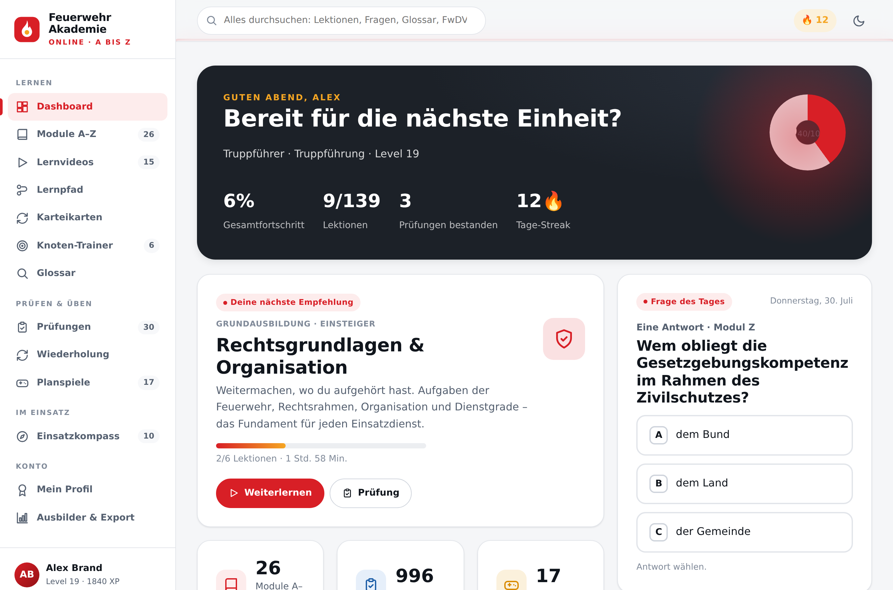
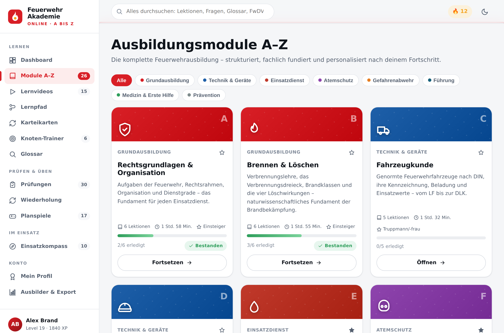
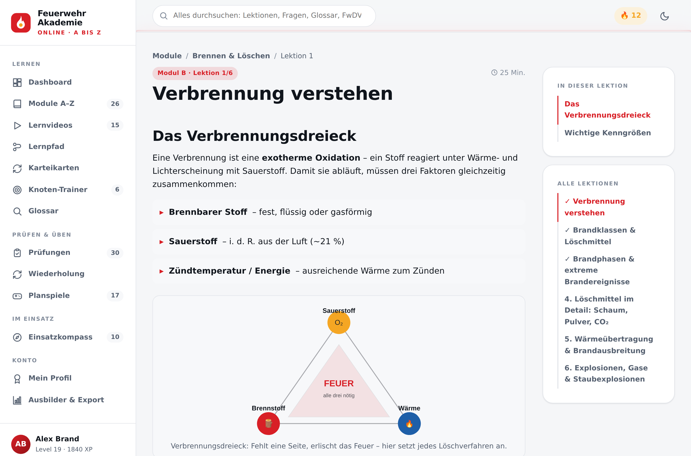
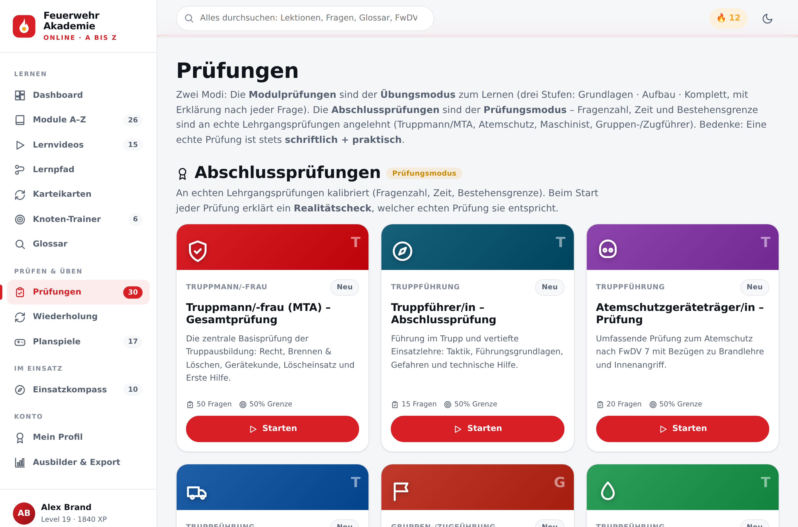
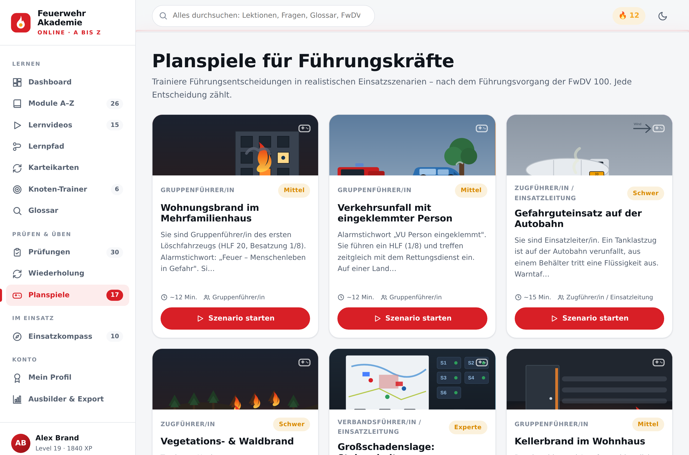
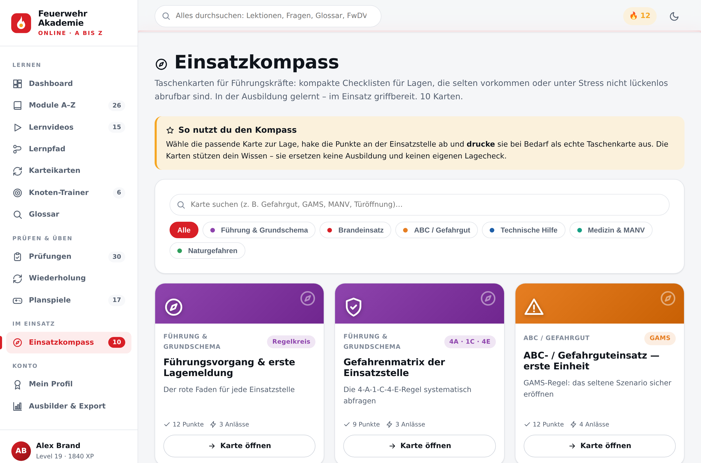
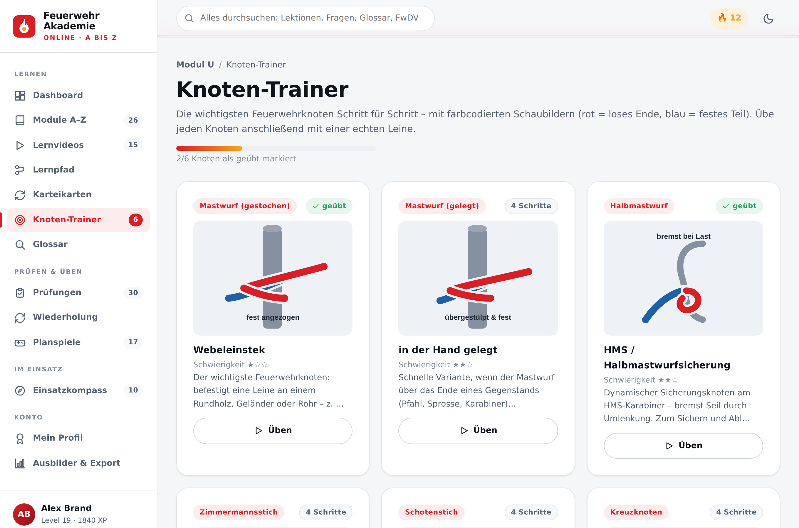
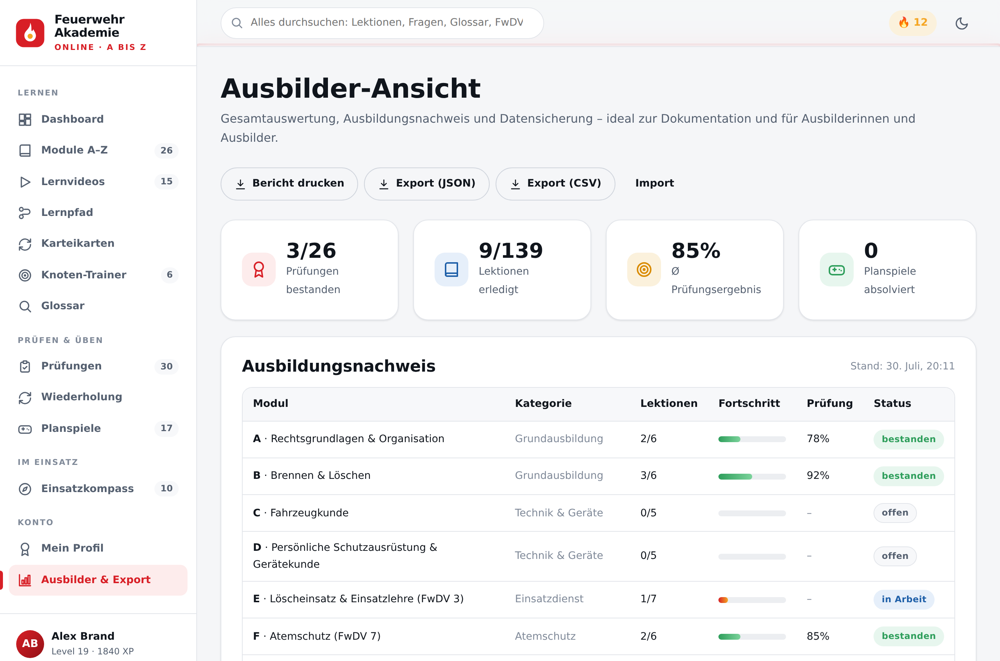
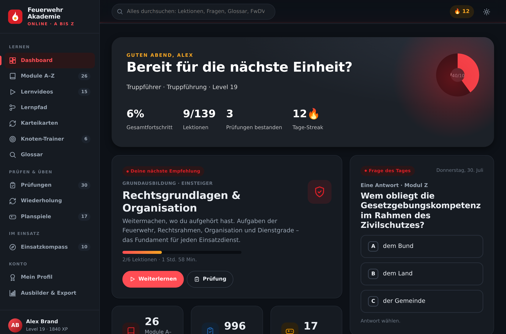

Eine moderne, offlinefähige Lernplattform für die gesamte Feuerwehr-Aus- und Fortbildung – von den Rechtsgrundlagen bis zur Verbandsführung. Fachlich orientiert an den Feuerwehr-Dienstvorschriften (FwDV).
Lernen, prüfen und führen auf einem Niveau, das bislang kostenpflichtigen Angeboten vorbehalten war: Die Feuerwehr Online Akademie bündelt die gesamte Aus- und Fortbildung der Feuerwehr in einer einzigen, personalisierten Web-App – von der Grundausbildung bis zur Führungskraft. Ohne Anmeldung, ohne Server, ohne Kosten.
Die Plattform umfasst 26 Ausbildungsmodule (A–Z) mit 139 Lektionen – von Rechtsgrundlagen, Brandlehre, Atemschutz und Gefahrgut über Maschinist, Baukunde und Führung (FwDV 100) bis zu Rettung, Wasserversorgung, Vegetationsbrand, Naturgefahren, Wasserrettung und Katastrophenschutz. Jede Lektion verbindet fachlich fundierten Text mit anschaulichen Schaubildern, Merkhilfen und Quellenangaben.
Das Herzstück für die Prüfungsvorbereitung ist eine Fragenbank mit 996 Prüfungsfragen, aus der sich 30 Prüfungen speisen – darunter neun modulübergreifende Abschlussprüfungen (Truppmann/MTA, Truppführer, Atemschutzgeräteträger, Maschinist, Gruppen-/Zugführung u. a.). Ein Prüfungssimulator bildet mit Countdown, freier Fragen-Navigation und ausdruckbarem Zeugnis den Ernstfall nach; ein Fehler-Center sammelt automatisch alle falsch beantworteten Fragen zum gezielten Üben.
Für angehende und aktive Führungskräfte bietet die Akademie 17 verzweigte Planspiele mit Live-Bewertung sowie einen Einsatzkompass mit zehn druckbaren Taschenkarten für Stress- und Sonderlagen. Ergänzt wird das Angebot durch Knoten-Trainer, Karteikarten mit Spaced-Repetition, Lernvideos, ein Glossar mit über 90 Fachbegriffen und eine modulübergreifende Volltextsuche.
Technisch ist die Anwendung eine Progressive Web App: Sie ist installierbar und funktioniert vollständig offline – ein echter Mehrwert für Gerätehäuser und Standorte mit schwachem Netz. Sämtliche Lerndaten bleiben lokal auf dem Gerät gespeichert; es gibt kein Tracking, keine Anmeldung und keinen Server. Die Oberfläche ist barrierefrei gestaltet, responsiv und in Hell- sowie Dunkelmodus nutzbar.
Die Inhalte orientieren sich an den geltenden Feuerwehr-Dienstvorschriften und der Modularen Truppausbildung (MTA). Sie dienen der Aus- und Fortbildung und ersetzen ausdrücklich nicht die praktische Ausbildung am Standort – maßgeblich bleiben stets die Vorschriften des jeweiligen Bundeslandes und die Anordnungen der zuständigen Führungskraft.
„Die beste Ausbildung darf nicht am Zugang scheitern. Deshalb ist alles frei verfügbar, läuft auf jedem Gerät und funktioniert selbst dann, wenn im Gerätehaus das Netz fehlt.“
Das Dashboard bündelt Fortschritt, Empfehlung und die „Frage des Tages“ – personalisiert nach Ausbildungsniveau.



Nach dem Leitner-System automatisch aus dem Curriculum erzeugt: Gekonnte Karten kehren seltener zurück, schwierige öfter.
15 kuratierte Lernvideos plus eine Suche über alle Inhalte – Lektionen, Fragen, Glossar, Planspiele und Quellen.

Zwei klar getrennte Modi: Modulprüfungen sind Übungsmodus (Lernen mit Erklärungen), Abschlussprüfungen sind Prüfungsmodus. Fragenzahl, Zeit und Bestehensgrenze sind an echte Lehrgangsprüfungen angelehnt (z. B. Gruppen-/Zugführung 20 Fragen / 60 min / 60 %). Jede Prüfung zeigt an, welcher echten Prüfung sie entspricht – inklusive Quellenvergleich. Ein eigener Bereich bereitet auf die Abzeichen der Jugendfeuerwehr vor (Jugendflamme 1–3, Leistungsspange).





prefers-reduced-motionVon der Grundausbildung bis zur Führung – jedes Modul mit eigenen Lektionen, Prüfungen, Schaubildern und Quellen.
| Code | Modul | Kategorie |
|---|---|---|
| A | Rechtsgrundlagen & Organisation | Grundausbildung |
| B | Brennen & Löschen (Verbrennungslehre) | Grundausbildung |
| C | Fahrzeugkunde | Technik & Geräte |
| D | PSA & Gerätekunde | Technik & Geräte |
| E | Löscheinsatz & Einsatzlehre (FwDV 3) | Einsatzdienst |
| F | Atemschutz (FwDV 7) | Atemschutz |
| G | Technische Hilfeleistung | Einsatzdienst |
| H | Sprechfunk & Digitalfunk | Technik & Geräte |
| I | ABC-Gefahrstoffe (FwDV 500) | Gefahrenabwehr |
| J | Erste Hilfe & Sofortmaßnahmen | Medizin |
| K | Absturzsicherung | Einsatzdienst |
| L | Führung & Leitung (FwDV 100) | Führung |
| M | Vorbeugender Brandschutz | Prävention |
| N | Maschinist (FwDV 2) | Technik & Geräte |
| O | Objekt- & Baukunde | Prävention |
| P | Arbeits- & Unfallschutz (UVV/DGUV) | Grundausbildung |
| Q | Jugend- & Nachwuchsarbeit | Grundausbildung |
| R | Digitale Einsatzunterstützung (Wärmebild & Drohne) | Technik & Geräte |
| S | Rettung & Selbstrettung | Einsatzdienst |
| T | Löschwasserversorgung & Wasserförderung | Technik & Geräte |
| U | Knoten, Stiche & Bunde | Technik & Geräte |
| V | Vegetations- & Waldbrandbekämpfung | Einsatzdienst |
| W | Unwetter, Hochwasser & Naturgefahren | Einsatzdienst |
| X | Wasserrettung, Eis & Bootsdienst | Einsatzdienst |
| Y | Motorkettensäge & technische Geräte | Technik & Geräte |
| Z | Katastrophenschutz & überörtliche Hilfe | Führung |
Die Feuerwehr Online Akademie ist eine frei verfügbare, nicht-kommerzielle Lernplattform für die Feuerwehr-Aus- und Fortbildung. Fachlich orientiert an den Feuerwehr-Dienstvorschriften (FwDV) und der Modularen Truppausbildung (MTA). Die Inhalte ersetzen keine praktische Ausbildung; maßgeblich sind die Vorschriften des jeweiligen Bundeslandes.
Projekt: Feuerwehr Online Akademie
Web / Quellcode: github.com/puRe991/FeuerwehrAkademie
Presseanfragen: tierbedarf.clever@gmail.com
Stand: Juli 2026
Bildnachweis: Alle Screenshots © Feuerwehr Online Akademie. Zur redaktionellen Verwendung im Zusammenhang mit der Berichterstattung über das Projekt freigegeben.